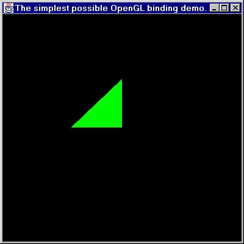

This page gives a brief technical overview of YAJOGLB (Yet Another Java OpenGL Binding) that describes the development environment used and the package that is supplied.
YAJOGLB was developed in an environment that can most charitably described as strange. It's mostly a combination of tools that have been ported from Unix to Windows NT, with some Microsoft software thrown in. Originally I tried to write the binding using version b19 of Red Hat's's Cygwin project. Everything worked fine until I tried to write native methods that returned Java objects instead of Java primitives. When I tried to return Java objects, the JVM crashed. Symantec's native compiler wasn't very happy with the code that gcc generated either. After trying to get things to work, I broke down and started using Microsoft's Visual C++ V6.0, which made things much better. There are still traces of Cygnus's code in the distribution though.
However, I continue to use Cygwin's make and bash for the Java code.
At first I used RCS to maintain the files. However, I RCS doesn't support file renaming, so I switched to CVS. I had hoped to use a single common repository for Linux and Windows, but that did not work out. I tried placing the repository on a FAT32 partition that was shared by Linux and Windows; there were lots of case problems. If anyone has a single machine solution that works please send me some email.
Using the Cygnus tools under Windows does have one advantage: shifting my development work to Linux is trivial.
There are only a couple of classes in the package, each with a well-defined purpose. First I will describe the public classes, and later on I will get into the gory details.
|
GL |
The GL class contains the core OpenGL methods |
|
GLConstants |
Holds the OpenGL constants. |
|
GLFeedbackBuffer |
Used to hold the OpenGL feedback buffer. |
|
GLSelectionBuffer |
Used to hold the OpenGL selection buffer. |
|
GLVertexPointer |
Used to hold vertex arrays for the OpenGL vertex array operations. |
|
GLU |
The GLU class contains the OpenGL GLU methods that have not been absorbed by the GLUNurbs, GLUQuadric, and GLUTesselator classes. |
|
GLUConstants |
The GLU method constants. |
|
GLUNurbs |
The Java stand-in for the GLU nurbs structure. |
|
GLUQuadric |
The Java stand-in for the GLU quadrics structure. |
|
GLUTesselator |
The Java stand-in for the GLU tesselator structure. This class is not done yet. |
|
Canvas |
The object that OpenGL can render in. |
|
Capabilities |
Represents the rendering capabilities of an Canvas. |
|
Context |
An explicit representation of the OpenGL context. |
|
TextureHelp |
A convenience class for reading in textures from TGA files. |
|
TGAFile |
A convenience class for reading in and writing out TGA files |
There are also some private classes that go along with the package. The most obvious are the ones that look like they come from Sun. Prior to the JAWT library in JDK 1.3 there was no way to get to the device context and window pointer for a particular AWT Canvas object under Microsoft Windows or X11.
The sun.awt.windows.WindowspDataAccess and sun.awt.windows.X11pDataAccess duplicate JAWT's functionality, and are included in case you want to compile the binding with a JDK prior to JDK 1.3. By default they will not be used, and the binding will be built using JAWT. Placing the two classes under the Sun hierarchy allows the binding to get at the private AWT windowing information. It's also extremely non-portable. But prior to the JAWT, there was no portable way to get the windowing information. The only "clean" way was to implement your own windowing support, which is a lot of work. In fact, that's what I foolishly tried to do for my first implementation.
There are some private classes and public interfaces inside of the package proper.
|
CHeapItem |
This is used to represent C objects that are stored on the heap. Several of the public OpenGL class, like GLUQuadric and GLUNurb are subclassed from it. |
|
OpenGLpDataAccess |
Implemented by WindowspDataAccess and X11pDataAccess so that Canvas's native code can get to native window details. |
It is easy to build the distribution under Linux. First, make sure
that you have GNU gcc (for the native library), a Java software
development kit (for the Java side) and python (for C dependency
generation) installed. In the top level directory type
make. You should see the python depend script run for
all of the C files first. The C files that depend on the Java native
headers will not be able to find the native headers; you can safely
ignore the warnings. Next the Java code will be compiled and the
native headers will be generated. The last thing that will happen is
that the C code will be compiled and the YAJOGLB native library will
be built in the distribution's top level directory.
Under windows things are a bit harder. You need to make sure that
cygwin is installed for the make command that Visual C++ is installed
for the C compiler. The Java software development kit also needs to
be installed, so that you can generate native header files and compile
the java code. Then, in the top level directory type make -k
NATIVEHEADERS. You will see a large number of errors for the
native code, which you can safely ignore, because you are only using
the make to generate the native header files. Once the native header
files have been generated you can build the native library with Visual
C++ (the project files are included, but you will probably need to
change some of the include directories). The library will be placed
in the Release or Debug directory, depending on what you ask Visual
C++ to compile. Their is a target in the Makefile named allJava that
will build all of the Java source.
This section describes how to write the simplest possible OpenGL code using the binding (which is stored in the test directory as Simplest.java) We'll call the class Simplest. It will extend Canvas and implement GLConstants (for ease of access to OpenGL's constants). There are a few instance variables, and I've omitted accessor methods in the interest of simplicity:
private Context context; private GL gl = new GL(); private GLU glu = new GLU();
Context is used to hold the OpenGL context that we'll create for our rendering; gl and glu are the objects that all of our OpenGL and GLU calls will be made through. Notice that while we create the gl and glu objects inline, we delay the context creation.
The Canvas class provides a method that is called once an Canvas has been setup for OpenGL rendering. It is called glInit(), and it's a good place to actually create the OpenGL context that the canvas object will use, and to perform any persistent matrix settings.
The first two lines create the OpenGL context, tying it to this specific Canvas, and make it the current context for the currently active thread. The created context will have all of its values taken from defaults set by the OpenGL package. The only one that really concerns us here is that the default OpenGL context has double buffering enabled. That will affect the paint() method described further below. We also make the naïve assumption that only one thread is performing rendering on Simplest, and will not bother with locking the context. The rest of the method sets up the viewing matrices and other OpenGL state that we will need for rendering.
public void glInit() { context = new Context(this);
context.makeCurrent(this);
/* Make sure that we use our depth buffer. */
gl.enable(DEPTH_TEST);
/* Position our viewer. */
gl.matrixMode(MODELVIEW);
gl.translate(0.0f, 0.0f, 0.5f);
/* Set up the viewing projection. */
gl.matrixMode(PROJECTION);
gl.frustum(-1.0f, 1.0f, -1.0f, 1.0f, 1.5f, 12.0f);
glu.gluLookAt(0.0f, 0.0f, -4.0f,
0.0f, 0.0f, -3.0f,
0.0f, 1.0f, 0.0f);
gl.color(0.0, 1.0, 0.0);
}
All of the actual rendering is done in the paint() method, which is called as needed by Canvas. Our method clears the canvas's display and depth buffer, and then draws a single triangle. The very last thing it does is exchange our display buffer with our rendering buffer, so that the user can see the triangle.
public void
paint() { gl.clear(COLOR_BUFFER_BIT | DEPTH_BUFFER_BIT);
/* Draw a single triangle. */
gl.begin(TRIANGLES);
gl.vertex(0.0, 0.0, 0.0);
gl.vertex(1.0, 0.0, 0.0);
gl.vertex(0.0, 1.0, 0.0);
gl.end();
swapBuffers();
}
We also need a static main function to start things up. Here is what it looks like:
public static void main(String args[]) {
Simplest simplest = new Simplest();
Frame frame = new Frame();
frame.setLayout(new GridLayout(1,1));
frame.add(simplest);
frame.setTitle("The simplest possible OpenGL binding demo.");
frame.pack();
frame.setSize(new Dimension(400,400));
frame.setBackground(java.awt.Color.black);
frame.setVisible(true);
}
}
The method simply creates a frame with a single object in it: an instance of our Simplest class. Everything else will be handled by the normal flow of events for a canvas object. The class makes no attempts to deal with input, so there is no way to exit the program other than hitting control-c! Lastly, here is a screenshot of the window when it pops up on the screen:

You can only perform OpenGL operations while the Canvas is locked. This is handled automatically for you inside of the paint() and glInit() methods. If you need to perform OpenGL operations outside of those two methods you'll need to execute them via the Canvas's lockedMethod method. Unfortunetly there are some required component methods, like componentResized, that you will have to support this way. Here is a sketch from the GeometryViewer of what you need to do.
In your constructor use reflection to get the method to call for a resize event, which is handled by componentResized.
class GeometryViewer {
Method resizedMethod;
GeometryViewer() {
...
resizedMethod = getClass().getMethod("lockedComponentResized",
parameterTypes);
...
}
...
// This gets invoked when the component is resized.
public void componentResized(ComponentEvent e) {
lockedMethod(resizedMethod, this, null);
}
// This gets called by lockedMethod.
public void lockedComponentResized(Object arg) {
// Handle the resize.
}
}